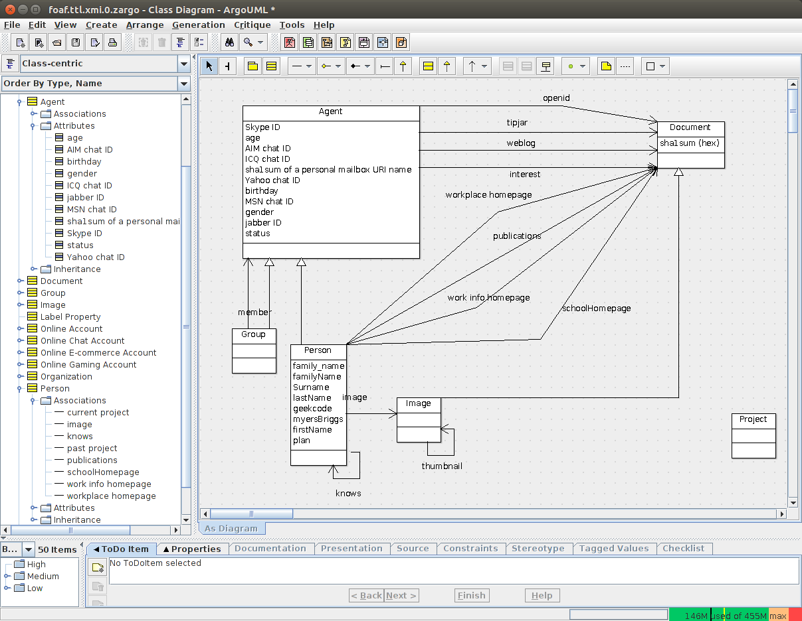

Ontologies in UML diagrams
I don't pretend to make an exact UML equivalent of any OWL ontology.
This is just a way to make UML diagrams from RDF vocabularies, using the Open Source tool ArgoUML.
UML model for FOAF in XMI
foaf.ttl.xmi
UML diagram of FOAF for ArgoUML 0.34
foaf.ttl.xmi.zargo
UML diagram of FOAF in ArgoUML

The XMI was obtained by two nice RDF tools:
-
Euler / EYE the N3 rule engine
-
Gloze the XML <--> RDF canonical transform tool
The N3 rules
owl_to_uml.n3
The shell script
owl2uml.sh
The sed script
owl_to_uml.sed
Ontologie chauffeurs / passagers / courses
drivers.context.jsonld
drivers.owl.ttl
Ontologie Collections botaniques ou zoologiques
biological-collections.owl.ttl